Continuação da aula de 30/09/2024. Esta terminou com projeto de controladores PD baseado em esboços no RL.
A idéia é usar uma ferramenta mais moderna e "contundente" para realizar projeto de controladores deste tipo (ou outros), no caso o App Control System Designer que acompanha o Toolbox Control Systems.
Recuperando dados aula passada:
xxxxxxxxxx>> load planta>> zpk(G) % se lembrando da planta 20 ------------------ (s+10) (s+4) (s+1) Continuous-time zero/pole/gain model.Ativando o App Control System Designer no Matlab:
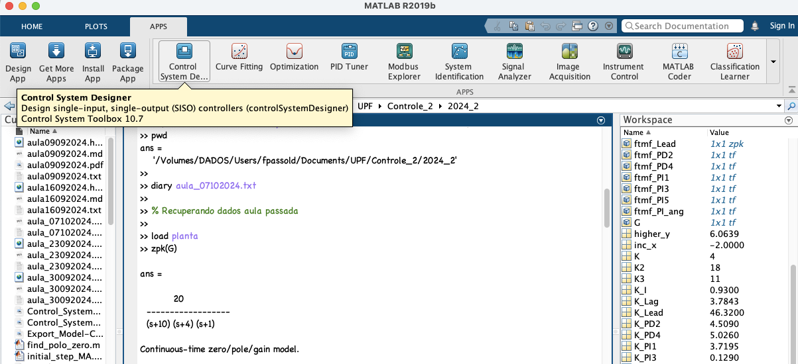
Depois de ativar este App, será necessário:
Confirmar arquitetura do sistema de controle, ingressando em "Edit Architecure" (1) e selecionando a primeira opção, referente a um sistema "clássico" de controle em MF:
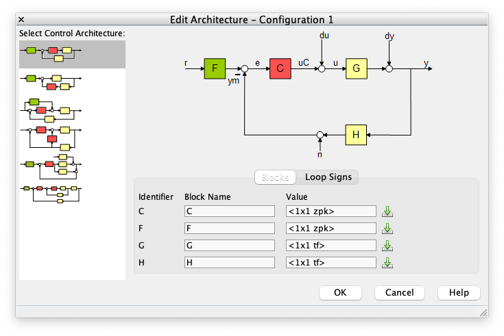
Na parte inferior desta janela (de "Edit Architecture"), se faz necessário carregar a tf da planta à se controlada, varíavel G no nosso caso. Para tanto, clicar no botão ao lado do bloco "G". Uma nova janela se abre permitindo selecionar alguma tf (transfer function) já presente no ambiente de trabalho do Matlab. Por isto foi importante antes de ativar este App, carregar os dados da aula passada. Note que apenas tf´s são listadas. Neste caso coincide que é a variável G. Nesta janela em que foi selecionada a tf para o bloco "G", clicar em importar.
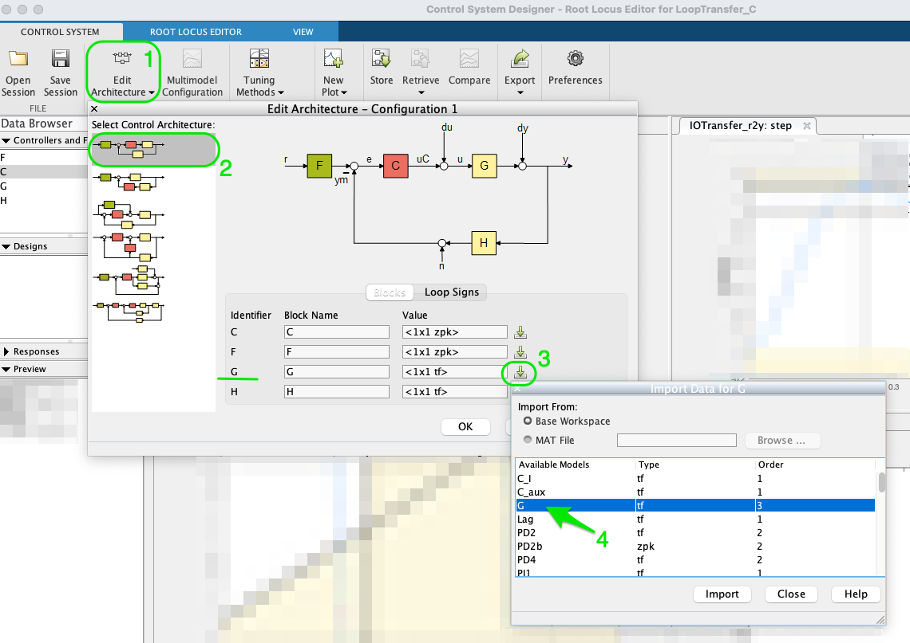
O Matlab deve voltar para a janela inicial de "Edit Architecture". Nesta janela cliclar agora no botão OK. Note que se tudo foi feito da forma correta, os gráficos da tela principal do "Control System Desinger" foram atualizadas (como esperado). Deve estar aparecer o resutlado do fechamento da malha usando apenas ganho (proporcional), unitário: note que o gr[afico do RL (à esquerda) e o gráfico do "step" (a direita) devem ter sido atualizados refletindo o comportamento desta planta para este controlador.
Na CLI do Matlab você pode listar todas as variáveis já criadas usando o comando
who.
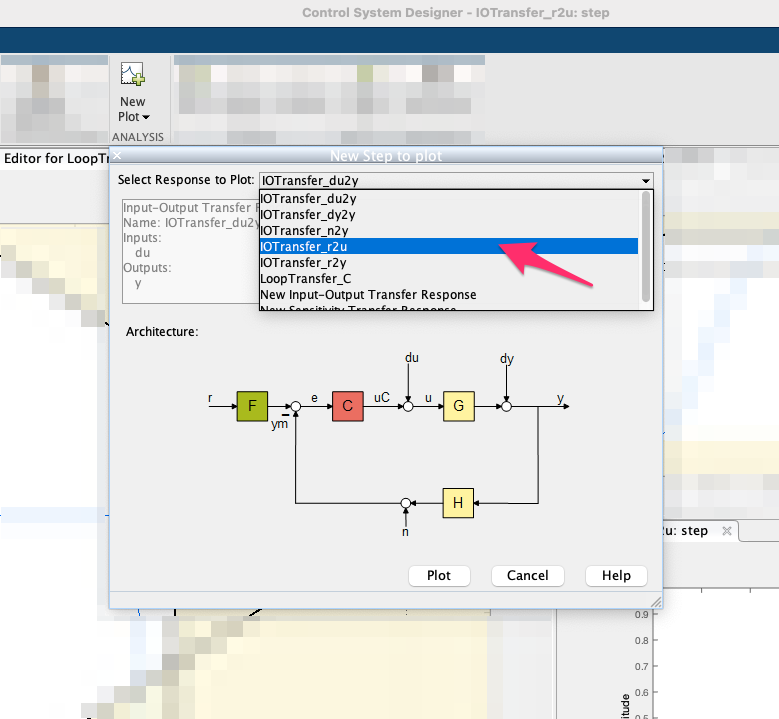
Isto fará como que na parte inferior direita o App atualize o gráfico do sinal de controle, para a referência (entrada degrau) usada como set-point do sistema.
E um último ajuste ainda, antes de iniciar realmente os trabalhos neste App. Se recomenda alterar "Preferences". Clique neste botão na aba superior. Na nova janela que se abre aparecem umas 5 abas/botões na parte superior. Selecionar a aba "Option" e mudar "Compensatpr Format" para "[x] Zero/pole/gain", isto fará o App exibir a tf do controlador num formato mais "agradável" para quem está projeto usando RL:
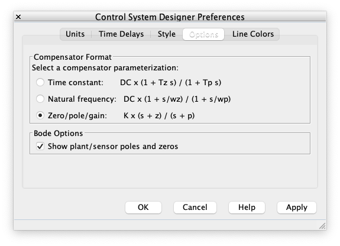
Daqui para frente você pode prosseguir com o projeto de seu controlador.
Outros ajustes interessantes:
Informar Requerimentos de projeto no RL do App:
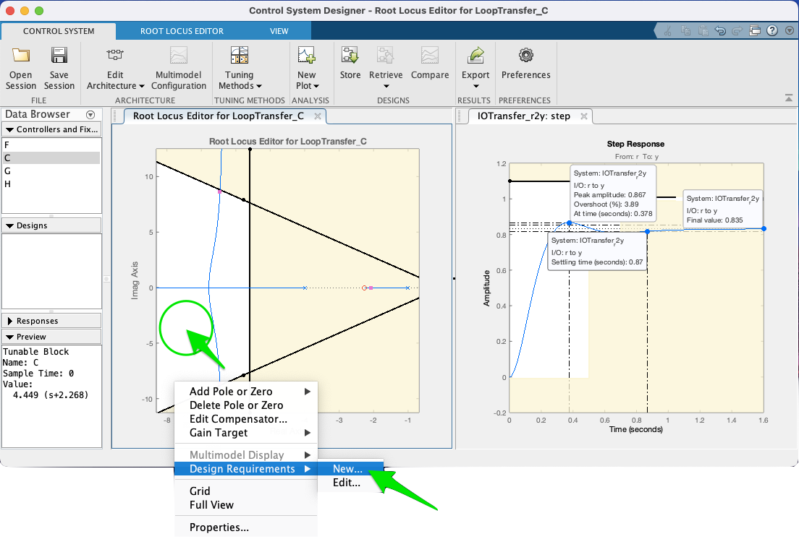
Neste caso, foram informados:
Obs.: Só é possível acrescentar ("New") ou editar requisitos na área branca do RL.
Informar Requerimentos de projeto no gráfico de "step", na resposta no domínio tempo:
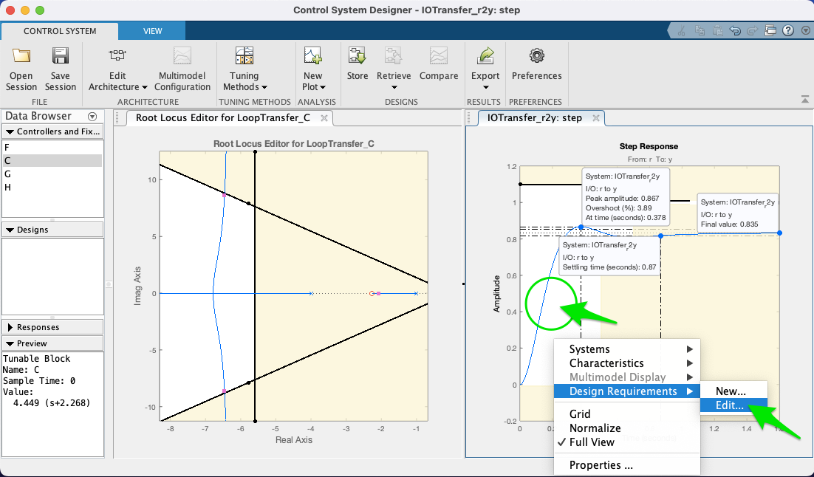
Neste caso, foram informados os valores:
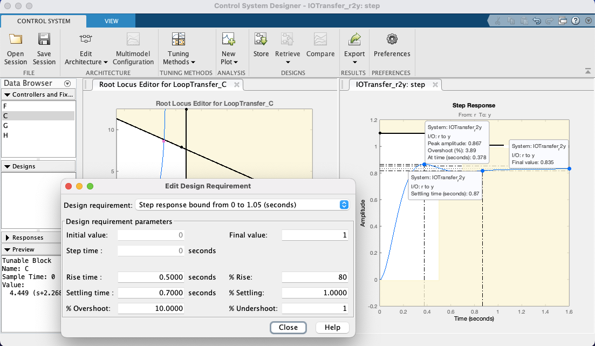
No nosso caso, vamos projetar (outro) PD ou um "Lead" (Controlador por Avanço de Fase). Estes controladores seguem o seguinte tipo de equação:
Note que são semelhantes. O Lead possui um pólo extra em relação ao PD. Se forem traçados esboços do RL mostrando como o mesmo se modifica conforme se adota uma diferente posição para seu pólo em relação aos pólos e zeros da planta, vai ser percebido que geralmente os pólos de um Lead se distanciam (e bem) dos pólos mais rápidos da planta, com tendêncida à: . Considere que o pólo de uma tf pode ser interpretada como um filtro passa-baixas. Então se o pólo do Lead vier "antes" do pólo mais rápido da planta, implica que este Lead estaria filtrando dinâmicas de alta frequência da planta associadas com este pólo mais rápido.
Considerando os projetos de PD´s já realizados na aulas passadas, vamos apostar na "Opção 2" (ver aula de 30/09/2024), na qual o zero do PD fica no intervalo: , ou seja, entre os 2 pólos mais "lentos" (dominantes) da planta.
Foi observado naquela aula, que provavelmente aproximar o zero do PD do pólo em é que vai garantir um menor , já que haverá um pólo de MF partindo do pólo de MA da planta em , na direção deste zero (desejavelmente se afastando do eixo ). Infelizmente, poderá ser percebido que a medida que o zero do PD se aproxima do pólo em , ocorre um outro efeito (algo indesejável): outros 2 pólos dominantes complexos partindo de e , no traçado do RL, assumem valores imaginários ("sobem" no plano-s), com ponto de partida (break-out) próximo de (varia conforme a posição do zero do PD), mas ao invés de simplesmente "subirem" o eixo , de forma paralela ao mesmo, antes disto, estes pólos de MF são levemente atraídos pelo zero, formando uma espécie de um "arco". Esta distorção é causada pela presença próxima do zero do PD (que atrai estes outros pólos de MF). E poderá ser percebido (com o auxílio deste App), que quanto mais próximo o zero do PD estiver do pólo em , mais este "arco" se torce (indesejavelmente) para direção do eixo , implicando no aumento do valor do tempo de resposta, .
Note que o zero do PD aparece no RL deste App como um zero na cor vermelha (os pólos e zeros da planta vão aparecer na cor azul). Note que quando você coloca o mouse sobre o zero, o cursor muda de seta para um "mão", indicando que sim, este zero pode ser movido (é a idéia de projetar um controlador, você está selecionando uma posição adequada para o seu zero ou pólo). Sugere-se que o estudante, modifique a posição deste zero, com a ajuda do mouse (clicar sobre o mesmo e manter o botão do mouse pressionado) e você poderá perceber facilmente como o "arco" se "abre" ou "fecha" e como o mesmo se afasta do eixo , conforme o zero do PD se aproxima ou afasta do pólo em . Note ainda que este App atualiza (quase em "real-time") o gráfico correspondente á entrada degrau para este controlador considerando a nova posição do seu zero e ganho adotado (é, acredito que até aqui você ainda não tenha editado este valor). Ver:
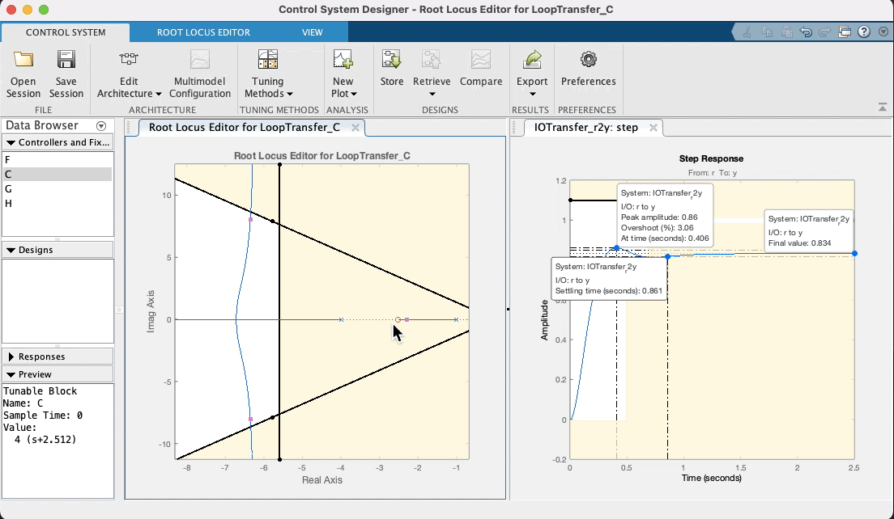
Note ainda que no RL mostrado por este App, os polos de MF aparecem com pequenos quadrados vermelhos, que surpresa (boa!), podem ser "arrastados" com o mouse, simulando o que você faria no CLI do Matlab usando a função rlocfind(). Se você "subir" estes pólos de MF (aumentar valores da parte imaginária) dos mesmos, implica que está aumentando o ganho do controlador. Observe na caixa de "Preview" do App, que se o bloco "C" (Controlador) estiver selacinado (na parte "Controllers and Fixed Parts"), você poderá observar o valor do ganho de MF aumentando (ou dimunindo, depende para que lado você está "arrastando" os pólos de MF com o mouse). Você pode até mesmo editar à mão, o valor do ganho, a posição do pólo ou zero do controlador, dando um duplo clique sobre a opção "C" (Controller) em "Controllers and Fixed Parts". Note que uma nova caixa de diálogo se abre com caixas de texto que permitirão que você edite (digite) à mão, valores desejados (parâmetros) do controlador. Ver:
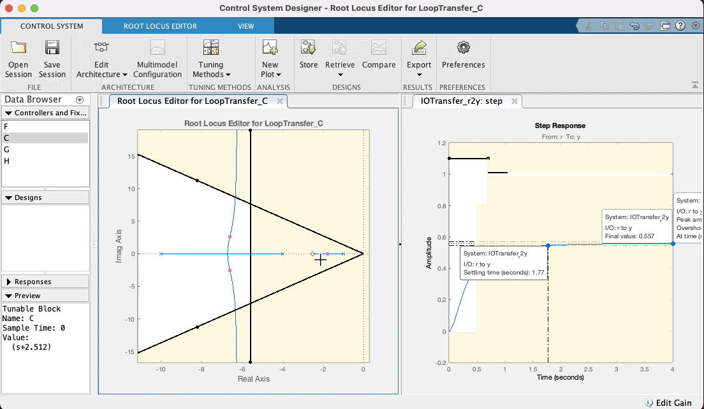
Mas voltando ao caso do nosso PD, depois de "brincar" no App, variando a posição do zero do mesmo em função do "arco" resultando no RL, e percebendo no gráfico de step características de resposta como o , que existe uma relação "custo bebefício" com a posição adotada para o zero do PD. Note ainda que intencionalmente se arrasta os pólos de MF para uma posição superior à linha guia para certo ou (linha do "sgrid"), considerando que neste caso, trata-se de um sistema do tipo 0 (continua sendo este sistema mesmo com o acrescimo do PD) e por isto, sempre haverá um erro de regime permanente () que pode ser reduzindo quando maior o ganho adotado para o controlador. Considere (lembre) que o Matlab ao mostrar "características de resposta" no gráfico da resposta ao degrau, calcula o mas em relação ao deste sistema. Se ele é do tipo 0, significa que adotado para o sistema (isto é, a saída não vai convergir para o mesmo valor adotado para nossa referência, no caso , porque foi usada uma entrada degrau unitário). O Matlab calcula o em relação à e não em relação à . Mas no gráfico da resposta ao degrau (ou mais simplesmente "step") podemos ver o valor de pico atingido pela resposta da planta no intante do pico do overshoot. Se é estipulado que o overshoot máximo é de 10%, isto implica que ( em relação à ). Então propositalmente se recomenda encontrar um valor de ganho em MF que faça o pico de resposta da planta, alcançar o máximo valor permitido. Neste App é fácil fazer isto, variando a posição dos pólos complexos de MF com ajuda do mouse e verificando a consequente resposta ao degrau para este novo valor de ganho.
Nesta seção de trabalho, acabou se fixando a posição do zero do PD em e o ganho do PD em , o que pode se visto na próxima figura (tela final do App com controlador sintonizado):
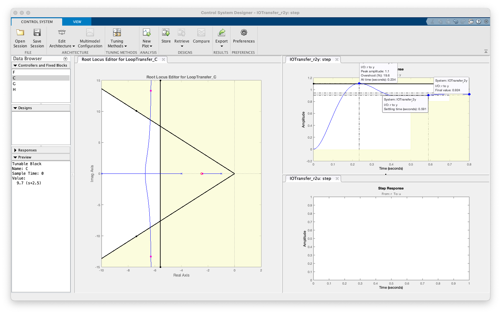
A tf final do controlador realizado com auxílio deste App, pode ser exportada de volta para a ambiente de trabalho (ou CLI do Matlab), usando-se a opção Export no barra de menu superior do App:
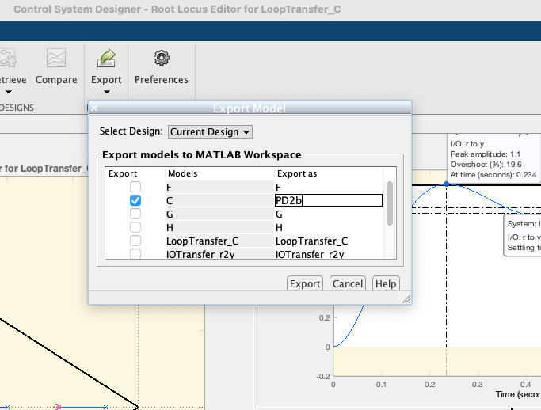
Note que neste caso (ver figura anterior), se deseja exportar apenas a tf do controlador, bloco "C" no App, e que o usuário pode especificar um outro nome para a variável tipo tf que vai retratar a equação do controlador recém projetado. Note que neste caso, optou-se por "Export As": PD2b. Uma vez editado estes dados, basta clicar no botão "Export" e a nova variável tf PD2b deve aparecer na CLI do Matlab:
xxxxxxxxxx>> whoYour variables are:C_I detal_x ftmf_PI_ang G erro limite K erro_Lag numerador K2 erro_PD2 polosMF K3 erro_PD4 polos_MFd K_I ftma_I sigma K_Lag ftma_Lag sum_th_polos K_PD2 ftma_PD2 sum_th_polos_deg K_PD4 ftma_PD4 th1 K_PI1 ftma_PD4aux th1_deg K_PI3 ftma_PI1 th2 K_PI5 ftma_PI3 th2_deg K_PI_ang ftma_PI5 th3 Kp ftma_PI_ang th3_deg Lag ftmf th4 OS ftmf2 th4_deg PD2 ftmf_I th_zero PD2b ftmf_I2 tout PD4 ftmf_K3 ts PI1 ftmf_Lag wd PI3 ftmf_PD2 wn PI5 ftmf_PD4 zero_PI PI_ang ftmf_PI1 zeta ans ftmf_PI3 delta_x ftmf_PI5 >> zpk(PD2) (s+2.5) Continuous-time zero/pole/gain model.>> zpk(PD2b) 9.7 (s+2.5) Name: CContinuous-time zero/pole/gain model.A seção de trabalho no Control System Designer pode ser salva usando a opção "Save Session". Um arquivo *.mat (de dados do Matlab) é criado, mas não seguindo a mesma estrutura interna dos arquivos *.mat criandos na CLI do Matlab. Por isto, recomenda-se adotar um nome que lembra à que se refere este arquivo. Neste caso, foi criado o arquivo: PD2b_ControlSystemDesignerSession.mat.
Vamos finalizar esta aula, realizando o projeto de controlador do tipo Lead mas usando a abordafem de contribuição angular usando um script inicialmente desenvolvido por NISE (mas atualizado), disponibilizado em:
% Projeto de PD (Aula de 03/10/2019; Uso de Contribuição angular), o arquivo: find_polo_zero.m.
find_polo_zeroO script: find_polo_zero.m foi melhorado à partir de um semelhante apresentado por Norman S. Nise no livro "Engenharia de Sistemas de Controle". Serve para automatizar o cálculo das contribuiçoes angulares resultantes dos pólos e zeros presentes na do controlador sendo projetado.
Pode ser usado o comando: help find_polo_zero para receber dicas de como usar o mesmo:
xxxxxxxxxx>> help find_polo_zero <strong>find_polo_zero</strong>.m Angular contribution routine to find out where to locate pole or zero of the controller depending on the desired location for MF poles Use: This routine already expects a tf named "ftma_aux" ftma_aux(s)=C(s)'*G(s); where: C(s)' is almost the full tf of the controller, except for the pole or zero that this routine is expected to determine using angular contribution. This routine uses angular contribution to find the position of the pole or the zero that is necessary to complete the tf of the controller. It asks almost at the end, whether the user wants to find out the position of the pole or the zero that is missing. Fernando Passold, 14/10/2020, 20/10/2020, 30/10/2022, 30/11/2022.>>Supondo que queira projetar um Lead. Neste caso, temos 3 incognitas:
No caso do Lead, sabe-se que o pólo do mesmo, normalmente é mais rápido que o pólo mais rápido da planta. Na maioria das vezes este pólo fica em (distante, "isolado" dos outros pólos e zeros na do sistema).
Como neste caso, o pólo mais rápido da planta está em , será arbitrado a posição para o mesmo. Esta definição se faz necessária para reduzir o número de incógnitas para este controlar. Assim, vamos usar este script para determinar o local do zero, incógnita faltante deste controlador.
xxxxxxxxxx>> p_Lead=20; % variável para o pólo do Lead>> C_aux=tf(1, [1 p_Lead]) % tf temporária do Lead enquanto seu zero é desconhecidoC_aux = 1 ------ s + 20 Continuous-time transfer function.>> ftma_aux=C_aux*G; % ftma auxiliar necessário para o script>> % Esta variável quase considera a eq. completa do controlador >> % na FTMA com excessão do seu zero. O script necessita a ftma_aux para ter>> % acesso à todos os zeros e pólos conhecidos da FTMA(s) com excessão do que falta>> % determinar.>> zpk(ftma_aux) % verificando a ftma_aux 20 ------------------------- (s+20) (s+10) (s+4) (s+1) Continuous-time zero/pole/gain model.>> find_polo_zeroRoutine to determine the position of the pole or zerothat is missing to complete controller design%OS$ (desired Overshoot, in %): ? 10 ts_d (desired settling time): ? 0.7Desired MF poles must be located at: s = -5.71429 ± j7.79644Evaluating the pole(s) contribution angle(s): Pole 1) in s=-20 + j(0) | angle: 28.62^o Pole 2) in s=-10 + j(0) | angle: 61.20^o Pole 3) in s=-4 + j(0) | angle: 102.40^o Pole 4) in s=-1 + j(0) | angle: 121.16^o Sum(angle{poles}) = 313.39^oEvaluating the zero(s) contribution angle(s): Sum(angle{zeros}) = 0.00^oDetermining pole or zero location of the controller:Select: [p]=pole or [z]=zero, for the controller ? zAngle contribution required for controller: 133.39^oThis means that the controller ZERO must be at s = 1.65507To finish the project, note that:ftma = 20 (s-1.655) ------------------------- (s+20) (s+10) (s+4) (s+1) Continuous-time zero/pole/gain model.Find the controller gain with the command: >> K_ = rlocfind(ftma)Note que quando se executou o script, foram ainda informados os seguintes dados (além da variável fama_auxter sido devidamente preparada):
Note que este script gera 2 gráficos:
Gráfico da contribuição angular final, mostrando ângulos calculados e usando linhas azuis para mostrar os pólos e zeros já conhecidos (estabelecidos) na ftma_aux e linhas vermelhas indicando onde deveria ficar localizado o zero do controlador para fazer com que o RL passe pelos pólos complexos que correspondem ao %OS e especificados. No caso:
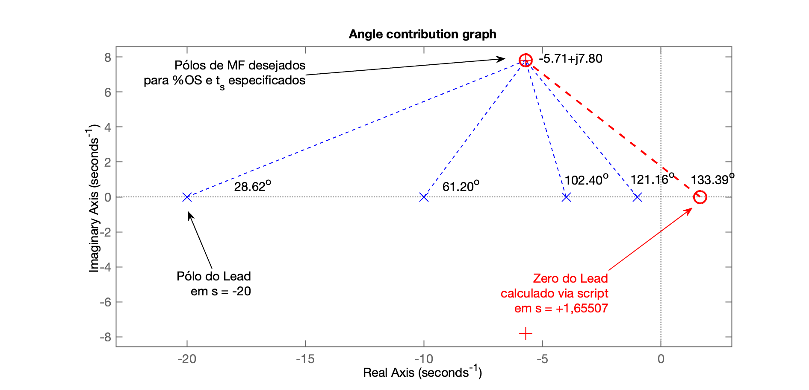
Gráfico final do RL obtido considerando o zero recém calculado:
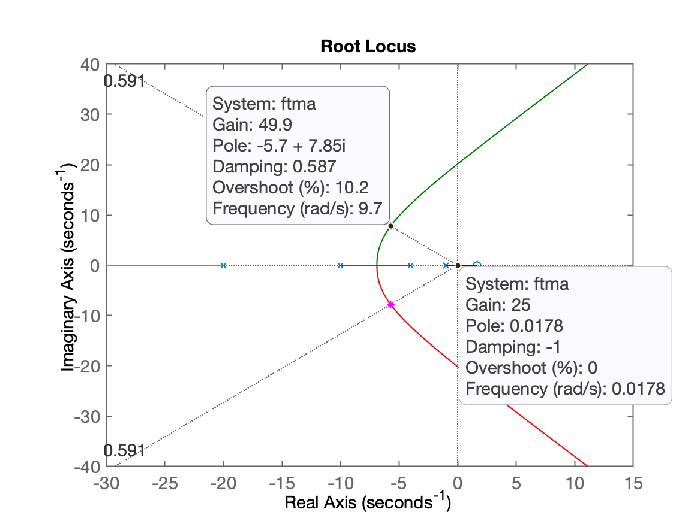
Infelizmente poderá ser percebido que neste caso, obedecendo à estes valores fornecidos, para o que RL passe efetivamente na posição desejada para os pólos complexos dominantes no RL, o zero deste PD resulta "instável", isto é, repare que acabou ficando em , na parte positiva direita do plano-s.
Ocorre que o RL não é formado apenas pelo par de pólos complexos, mas existe um pólo de MF real mais dominante até que os pólos complexos que justamente parte do pólo em MA (da planta) em que é atraído pelo zero do Lead em , isto significa que, para até certo valor de ganho (enquanto o pólo real dominante não cruzar o eixo em direçao do plano-s positivo), ainda teremos uma resposta (em MF), estável. Mas se este ganho superar este ponto (ponto do "Ultimate Gain"), o sistema passa a ser instável em MF. Razão pela qual, este projeto será simplesmente abortado.
A figura anterior que mostra o RL final para o projeto deste Lead, permite observar, com a ajuda dos Data Tips, que: Ultimate Gain, , mas o ganho que deveria ser adotado para o RL passar sobre o par de pólos complexos desejados, é , o que fatalmente vai implicar em pólo real dominante na parte positiva do plano-s ou instabilidade.
O problema aqui é que fomos muito "ganaciosos" ao estabelever o valor de segundos para este controlador com pólo em .
Sendo mais "conservador" na especificação do desejado para este controlador, vamos tentar o valor: segundos, e esperar que o novo zero calculando usando contribuição angular, resulte na parte esquerda (parte real negativa) no plano-s.
xxxxxxxxxx>> find_polo_zeroRoutine to determine the position of the pole or zerothat is missing to complete controller design%OS$ (desired Overshoot, in %): ? 10ts_d (desired settling time): ? 0.9Desired MF poles must be located at:s = -4.44444 ± j6.06389Evaluating the pole(s) contribution angle(s):Pole 1) in s=-20 + j(0) | angle: 21.30^oPole 2) in s=-10 + j(0) | angle: 47.51^oPole 3) in s=-4 + j(0) | angle: 94.19^oPole 4) in s=-1 + j(0) | angle: 119.60^oSum(angle{poles}) = 282.59^oEvaluating the zero(s) contribution angle(s):Sum(angle{zeros}) = 0.00^oDetermining pole or zero location of the controller:Select: [p]=pole or [z]=zero, for the controller ? zAngle contribution required for controller: 102.59^oThis means that the controllerZERO must be at s = -3.08994To finish the project, note that:ftma =20 (s+3.09)-------------------------(s+20) (s+10) (s+4) (s+1)Continuous-time zero/pole/gain model.Find the controller gain with the command:>> K_ = rlocfind(ftma)
Desta vez, com estes dados, usando contribuição angular, descobrimos que o zero deste controlador fica na parte real negativa do plano-s, levando a um pólo real MF dominante também na parte real negativa do plano-s, ou seja, teremos um sistema "estável" em MF.
Os seguintes gráficos foram gerados:
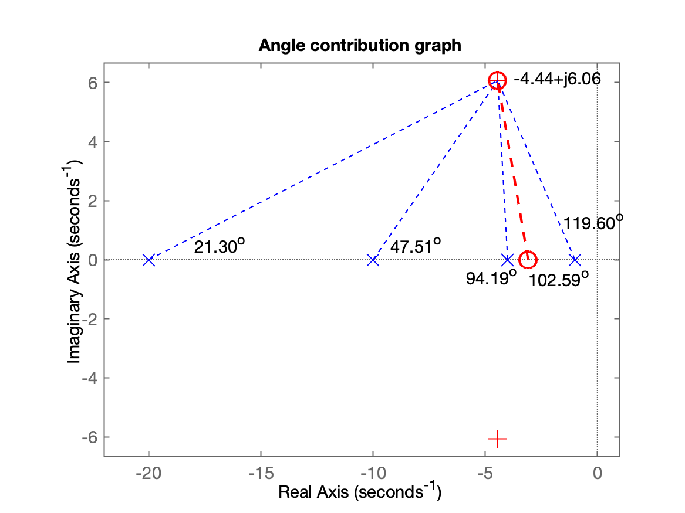
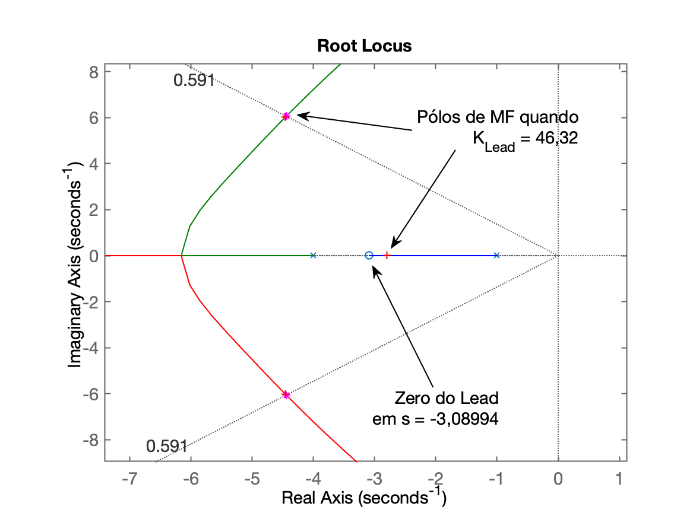
O ganho do controlador foi definido aproveitando o RL já gerado pelo script:
xxxxxxxxxx>> ftma_Lead=ftma;>> K_Lead=rlocfind(ftma)Select a point in the graphics windowselected_point = -4.4639 + 6.0242iK_Lead = 46.32Fechando a malha com o valor de ganho encontrado:
xxxxxxxxxx>> ftmf_Lead=feedback(K_Lead*ftma,1);>> figure; step(ftmf_Lead, ftmf_PD2)>> legend('Lead', 'PD2')E finalmente obtemos a seguinte resposta ao degrau para este controlador (Lead) comparado com a resposta do PD projetado na aula anterior:
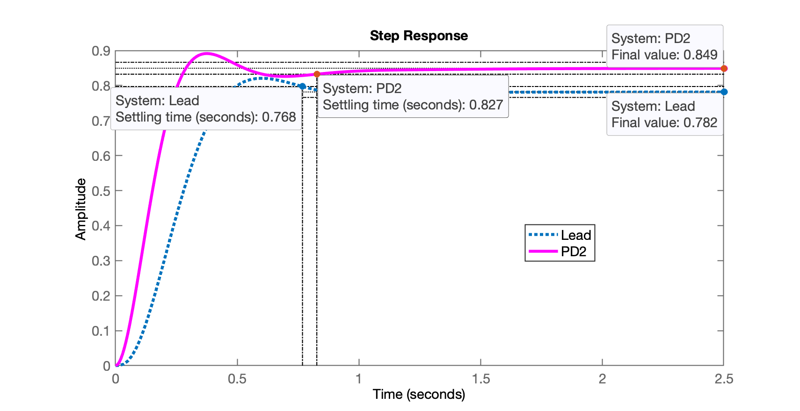
Percebemos que este Lead foi até mais rápido que o PD2, mas o erro de regime permanente do Lead é maior que o encontrado para o PD projetado anteriormente:
xxxxxxxxxx>> dcgain(ftmf_Lead)ans = 0.78157>> dcgain(ftmf_PD2)ans = 0.84931>> erro_Lead = ((1-dcgain(ftmf_Lead))/1)*100erro_Lead = 21.843>> erro_PD2 = ((1-dcgain(ftmf_PD2))/1)*100erro_PD2 = 15.069Lembrando que havíamos especificado como requisitos de controle, , notamos que nenhum destes controladores permite atingir este objetivo. Mas estes controladores são mais rápidos que o PI ou Lag já projetados na aula de 16/09/2024.
Motivo pelo qual, a única forma de tentar atingir os requisitos de controle especificados é propondo controladores "mais completos", isto é, que agregem ao mesmo tempo, ação integral (para eliminar erro de regime permanente) e ação derivativa (para acelerar a resposta do sistema). Temas que serão contemplados nas próximas aulas.
Salvando seção de trabalho atual e encerrando atividades...
xxxxxxxxxx>> save planta>> diary off>> quit🌊 Fernando Passold 📬 ,